Explore Our Photo Gallery
Glimpses of campus life, academic excellence, dignitary visits, and vibrant cultural spirit at St. Gonsalo Garcia College, Vasai
Campus & Infrastructure
Serene campus environment behind Vasai Cricket Ground, equipped with modern academic blocks, auditoriums, and smart classrooms.
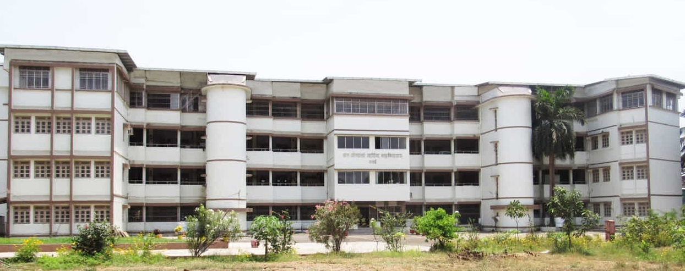

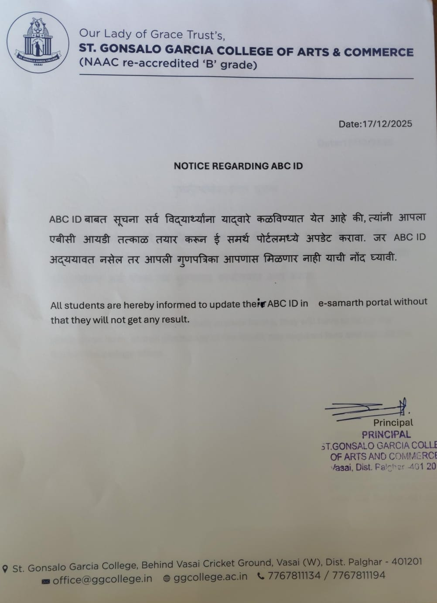
International Conference on Sustainable Development
Multidisciplinary international conference bringing together national and global academic delegates, researchers, and distinguished scholars.
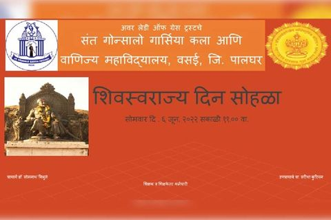
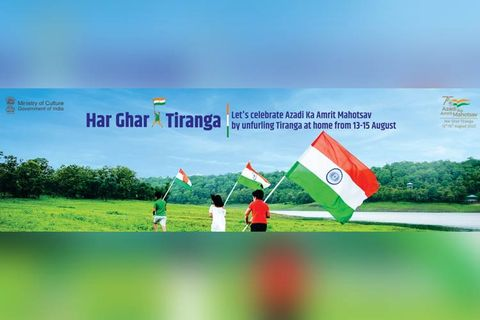
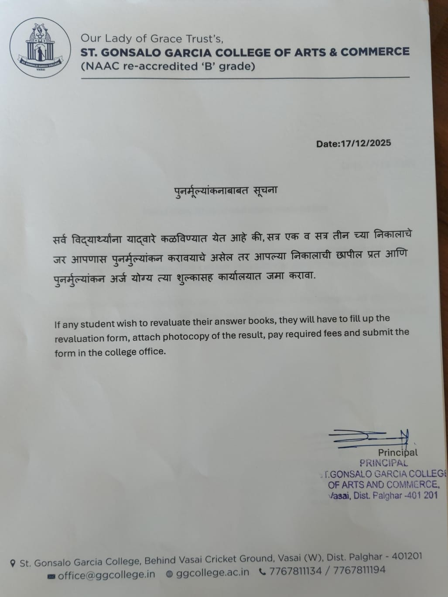
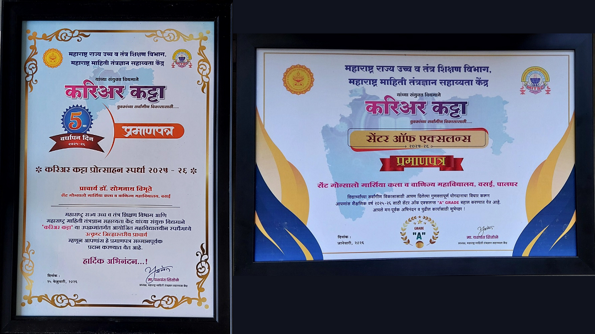
Archbishop Leopoldo Girelli's Pastoral Visit
Historic pastoral and institutional visit of Archbishop Leopoldo Girelli, Apostolic Nuncio to India, to St. Gonsalo Garcia College.
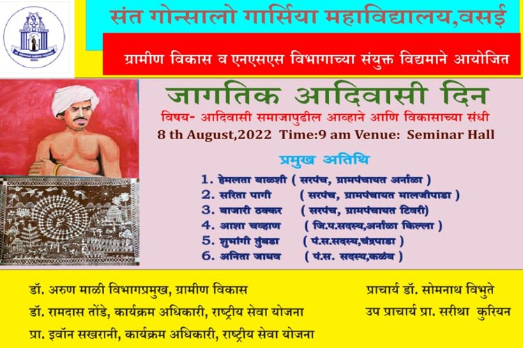


UPSC / MPSC & Career Katta Center
Equipping students of Vasai and Palghar district with competitive exam coaching, interview guidance, and professional career pathways.
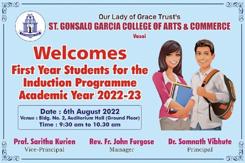
Convocation & Farewell Functions
Celebrating academic achievements, graduation honors, and emotional farewells for our outgoing batches.
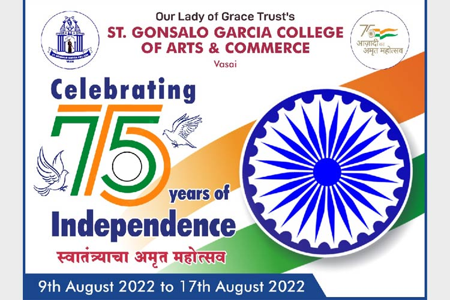
Cultural Events & Youth Festival
Vibrant music, dance, theatre, and artistic celebrations showcasing the diverse talents of GG College youth.
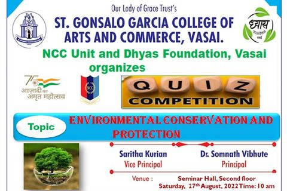
Annual Sports Day & Athletic Meet
Promoting fitness, sportsmanship, and athletic excellence across track, field, and indoor sporting events.
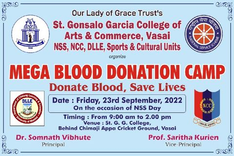